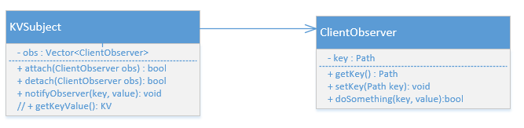
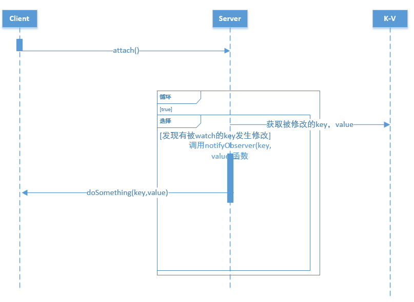
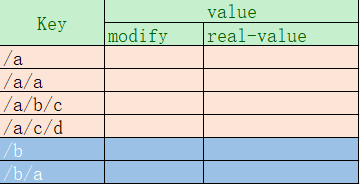

PingCap招聘的第一个home exercise。
需求
使用 gRPC 设计一个带有 watch 机制的 KV 数据库
能 watch 特定的 key，譬如如果 key /a/b/c 有变化，能收到变化通知
能 watch 特定的 key tree，譬如 /a，那么 /a/b/c 有变化，也能收到通知
不需要代码实现，但需要列出设计文档
实现
分析
首先这个需求本身就是观察者模式（Observer Pattern）可以解决的问题。
在KV数据库节点中运行Subject类，在客户端运行Observer类。
简化的观察者模式类图如下：

因为需求中没有很多对象，所以忽略观察者模式中的继承关系。
KVSubject中没有set函数是因为KVSubject不修改KV数据库。
时序图如下：

其中为了减少gRPC调用，发生变化之后直接先将KV返回给Client。
当client要watch特定key时，先初始化一个ClientObserver并设置key值（这个key也可以存储key tree），通过gRPC调用Server的attach()函数注册自己要watch的key。
需求中要watch的key分为key和key tree。key tree是key的集合，集合发生变化就会收到通知。所以在server发现有key发生变化时除了要通知这个对应的key外还要通知这个key所属的集合。
notifyObserver(key, value)实现伪码：1
2
3for observer in obs:
observer.key 包含 key：
observer.doSomething(key, value) // 通过gRPC调用client端函数通知对方。
同步通知模式
一个比较简单的方式是每当kv数据库发生变化时触发一个事件，调用server中的notifyObserver(key, value)函数。将这个变化通知对应的观察者。
因为这个带watch机制的kv数据库能够监听一个具体的key，所以这个触发粒度是对应每一个key的。这就导致可能会有大量没用的事件被触发。
而且大量的事件会拖累kv数据库的更新，插入等修改数据库的操作。同时也可能导致server负载过重，一直要处理kv触发的事件。
异步通知模式
为了解决同步通知模式的一些问题而采用异步通知的模式。
数据结构设计：
在value 中加入modify字段，存储改value是否被修改。
在存储是采用目录分层存储，加快Server访问自己要watch的key。
结构如下：

加入要watch的key tree是 /a 则只需要从 /a 的第一项开始顺序扫描到第一个不是以 /a 开头的key结束就行了
流程设计：
- kv数据库修改或插入一条数据时，将modify位设置为 true。
- Server设置一个合理的计时器，周期性的扫描kv数据库表：
- 遍历obs对象，根据其中存储的key或者key tree。扫描相应的数据的modify位是否为true，如果发生修改则调用obs[i].doSomething(key, value)发出通知。
- 完成遍历之后将此次遍历数据中的modify位为true的设置为 false。
优缺点分析：
优点： 将数据库的修改和通知分开来了，而且由于是Server主导的遍历，可以只扫描配置了要watch的相应的key就行了。层次化的存储也使得如果watch的是key tree的话，只要访问相应的目录下的key-value就行了，具有连续扫描的特点。使得扫描的效率大大提高，最小化Server的负担。
不过有一种可能，如果这个key tree对应的数据十分大而只有一两个修改，那也会做了很多无用功。这时候可以思考要不要将modify字段独立出来单独建一个表。
缺点： 因为是异步的，所以一个key-value的多个修改，只有最后一个修改会在Server遍历它时发出通知，中间的修改将会被忽略。
不过这也不一定会产生问题，有时候Client端并不关注中间结果。
如果Client端需要监听每一个修改：
- 监听该key或key tree是只读的，那么可以通过mvcc保持多个版本，同时modify字段中保持时间戳数据。这样就可以将多个修改都通知给Client了。
- 监听该key或key tree是读写的，那么只能通过上面的同步模式了。
其中异步通知模式参考的是Percolator中的通知模式。